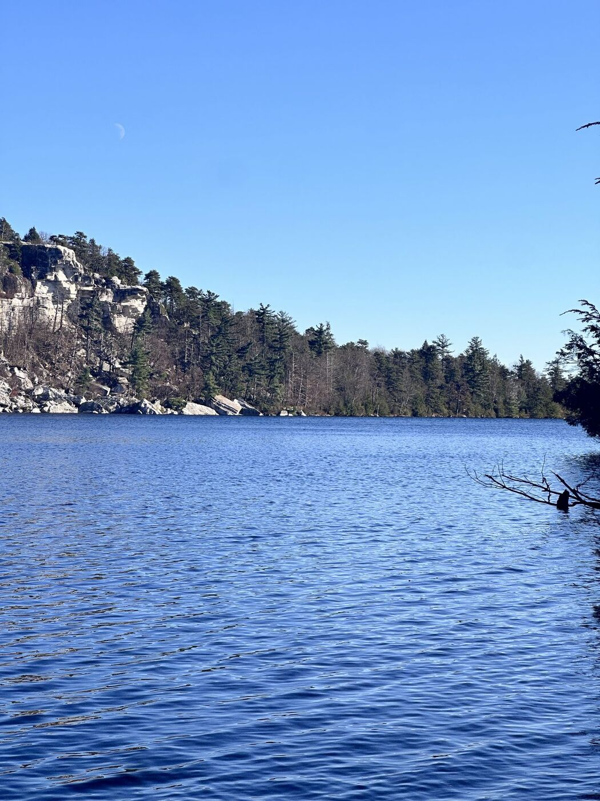

Gallery
Rooted in place.
Local, tangible, and already all around us.
Gallery
The ecosystem we are part of.
Trees, water, bark, bloom, and leaf: the local flora and fauna that rarely make it into a standard education, and that every community already lives beside. Tap any photo to enlarge.
Join the conversation
Help us build the first containers
We are looking for facilitators, participants, community partners, and advisors who believe understanding has to come before agreement.